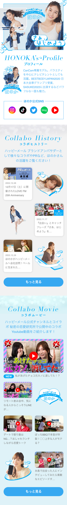

キャンペーンLP
アンバサダー紹介ページ
-
担当撮影提案、スチールレタッチ、LPデザイン作成、バナー作成
-
使用ツールPhotoshop:メインビジュアル、画像加工 Adobe XD:ワイヤーフレーム、デザインカンプ
-
ポイント元々別々にコラボ記事やLP、YouTube動画としてあったものを1つの紹介ページとしてLPにまとめました。ディレクターとの打ち合わせの段階では、プロフィールや公式SNSはページ最下部に配置されていましたが、アンバサダーの紹介ページなのでMV直下ですぐ見てもらったほうが良いのではないか？と提案して変更していただきました。コーポレートカラーを使い、爽やかでフレッシュなモデルさんの魅力を引き立てるようなLPになるよう魅力的な写真とコーポレートカラーで作成したグラフィックを配置しています。また、今後もコラボの記事や動画が増えることや、1カラムの記事が入ることを想定し、グラフィックを挟むことで記事一覧に変化を与えながら記事の数を調整できるようになっています。

戻る